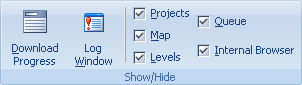
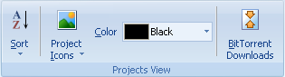
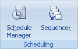

Use the View tab to enable or disable various User Interface features of Portable Offline Browser and to view or change Project visible settings.

Languages - Contains list of all available User Interface languages.
Color Scheme - Change the color of the user interface.
Show Old Menu - Turn off ribbon and switch to the old main menu and toolbar. Use View menu - Show Ribbon to switch back.

Download Progress - Enables or disables the downloading progress panel below the Projects tree.
Log Window - Enables or disables the downloading messages log.
Projects - Enables or disables the Projects tree.
Map - Enables or disables the Map of downloaded web sites.
Levels - Enables or disables the tab that shows all links in downloaded Web pages.
Queue - Enables or disables Queue Manager.
Internal browser - Enables or disables the Internal browser panel.

Sort - Sort Projects in the selected folder by name, URL or download time.
Project Icons - Change the icon of the selected Project.
Color - Change the color of the selected Project in the tree.
BitTorrent - Opens a dialog with all your torrent downloads to start, delete and do other actions.

Schedule Manager - enables or disables Schedule Manager panel.
Sequencer - Enables or disables Sequencer that allows to download Projects one after another.